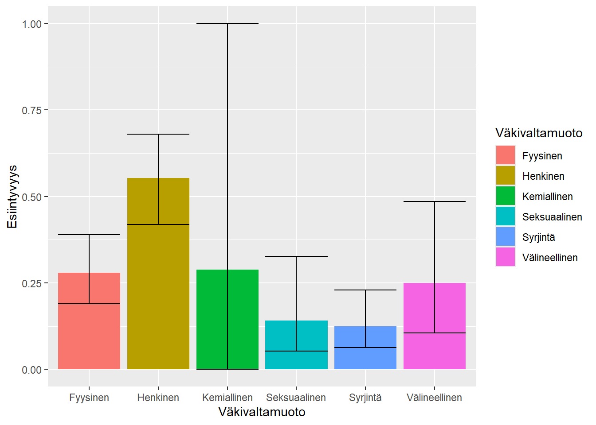

Koodi
library(tidyverse)
library(metafor)
metadata <- read.csv2("data/metaanalyysidata.csv") %>%
dplyr::filter(!stringr::str_detect(väkivaltamuoto, ","))
metadata <- metadata %>%
tibble::rowid_to_column("ID")Sisällytimme meta-analyysiin kirjallisuuskatsauksesta 33 tutkimusta, jotka täyttivät seuraavat kriteerit:
Seulosimme kaikki kriteerit täyttävät tutkimukset läpi ja keräsimme Excel-taulukkoon tutkimusten jokaisen estimaatin arvon sekä estimaatin otoskoko. Jos tutkimus raportoi sisäistä katoa, käytimme estimaattikohtaista otoskokoa; jos katoa ei raportoitu, käytimme tutkimuksen (tai sen relevanttien kohderyhmien) otoskokoa.
Luokittelimme kaikki estimaatit väkivaltaluokituksen mukaisesti (Bildjuschkin ym. 2019). Jätimme pois kaikki estimaatit, jotka käsittelivät “Muu”-luokkia.
Kuudelle estimaatille emme voineet antaa yksiselitteistä luokkaa. Jätimme nämä estimaatit analyysin ulkopuolelle:
Muunsimme ensin kaikki prosenttiluvut logit-luvuiksi ja laskimme niiden keskivirheet. Tämä muunnos tehdään, jotta voimme suorittaa monitasoisen meta-analyysin myöhemmin.
metadata <- metadata %>%
add_column(
pros_log = numeric(nrow(metadata)),
pros_sqrtse = numeric(nrow(metadata))
)
metadata <- metadata %>%
dplyr::select(ID, otoskoko, pros) %>%
dplyr::filter(pros != 0) %>%
dplyr::mutate(
pros_log = log(pros/(1-pros)),
pros_sqrtse = (1/(otoskoko*pros))+(1/(otoskoko*(1-pros)))
) %>%
dplyr::rows_update(
x = metadata,
y = .,
by = "ID",
copy = TRUE
)Asetimme sitten jokaiselle väkivaltamuodolle oman kolmitasoisen meta-analyyttisen mallin metafor-paketin avulla.
malli_fyysinen <- metafor::rma.mv(
yi = pros_log,
V = pros_sqrtse,
slab = artikkeli,
data = dplyr::filter(metadata, väkivaltamuoto == "Fyysinen"),
random = ~ 1 | artikkeli/ID,
test = "t",
method = "REML"
)
tulokset <- tulokset %>%
add_case(
muoto = "Fyysinen",
arvo = as.double(exp(malli_fyysinen$b) / (1 + exp(malli_fyysinen$b))),
ci_ala = as.double(exp(malli_fyysinen$ci.lb) / (1 + exp(malli_fyysinen$ci.lb))),
ci_ylä = as.double(exp(malli_fyysinen$ci.ub) / (1 + exp(malli_fyysinen$ci.ub)))
)malli_henkinen <- metafor::rma.mv(
yi = pros_log,
V = pros_sqrtse,
slab = artikkeli,
data = dplyr::filter(metadata, väkivaltamuoto == "Henkinen"),
random = ~ 1 | artikkeli/ID,
test = "t",
method = "REML"
)
tulokset <- tulokset %>%
add_case(
muoto = "Henkinen",
arvo = as.double(exp(malli_henkinen$b) / (1 + exp(malli_henkinen$b))),
ci_ala = as.double(exp(malli_henkinen$ci.lb) / (1 + exp(malli_henkinen$ci.lb))),
ci_ylä = as.double(exp(malli_henkinen$ci.ub) / (1 + exp(malli_henkinen$ci.ub)))
)malli_seksuaalinen <- metafor::rma.mv(
yi = pros_log,
V = pros_sqrtse,
slab = artikkeli,
data = dplyr::filter(metadata, väkivaltamuoto == "Seksuaalinen"),
random = ~ 1 | artikkeli/ID,
test = "t",
method = "REML"
)
tulokset <- tulokset %>%
add_case(
muoto = "Seksuaalinen",
arvo = as.double(exp(malli_seksuaalinen$b) / (1 + exp(malli_seksuaalinen$b))),
ci_ala = as.double(exp(malli_seksuaalinen$ci.lb) / (1 + exp(malli_seksuaalinen$ci.lb))),
ci_ylä = as.double(exp(malli_seksuaalinen$ci.ub) / (1 + exp(malli_seksuaalinen$ci.ub)))
)malli_välineellinen <- metafor::rma.mv(
yi = pros_log,
V = pros_sqrtse,
slab = artikkeli,
data = dplyr::filter(metadata, väkivaltamuoto == "Välineellinen"),
random = ~ 1 | artikkeli/ID,
test = "t",
method = "REML"
)
tulokset <- tulokset %>%
add_case(
muoto = "Välineellinen",
arvo = as.double(exp(malli_välineellinen$b) / (1 + exp(malli_välineellinen$b))),
ci_ala = as.double(exp(malli_välineellinen$ci.lb) / (1 + exp(malli_välineellinen$ci.lb))),
ci_ylä = as.double(exp(malli_välineellinen$ci.ub) / (1 + exp(malli_välineellinen$ci.ub)))
)malli_kemiallinen <- metafor::rma.mv(
yi = pros_log,
V = pros_sqrtse,
slab = artikkeli,
data = dplyr::filter(metadata, väkivaltamuoto == "Kemiallinen"),
random = ~ 1 | artikkeli/ID,
test = "t",
method = "REML"
)
tulokset <- tulokset %>%
add_case(
muoto = "Kemiallinen",
arvo = as.double(exp(malli_kemiallinen$b) / (1 + exp(malli_kemiallinen$b))),
ci_ala = as.double(exp(malli_kemiallinen$ci.lb) / (1 + exp(malli_kemiallinen$ci.lb))),
ci_ylä = as.double(exp(malli_kemiallinen$ci.ub) / (1 + exp(malli_kemiallinen$ci.ub)))
)malli_syrjintä <- metafor::rma.mv(
yi = pros_log,
V = pros_sqrtse,
slab = artikkeli,
data = dplyr::filter(metadata, väkivaltamuoto == "Syrjintä"),
random = ~ 1 | artikkeli/ID,
test = "t",
method = "REML"
)
tulokset <- tulokset %>%
add_case(
muoto = "Syrjintä",
arvo = as.double(exp(malli_syrjintä$b) / (1 + exp(malli_syrjintä$b))),
ci_ala = as.double(exp(malli_syrjintä$ci.lb) / (1 + exp(malli_syrjintä$ci.lb))),
ci_ylä = as.double(exp(malli_syrjintä$ci.ub) / (1 + exp(malli_syrjintä$ci.ub)))
)Tulokset ovat esitettynä alla olevassa taulukossa (Taulukko 6.1) ja kuviossa (Kuva 6.1).
| muoto | arvo | ci_ala | ci_ylä |
|---|---|---|---|
| Fyysinen | 0.2789465 | 0.1895949 | 0.3901356 |
| Henkinen | 0.5533997 | 0.4192201 | 0.6802255 |
| Seksuaalinen | 0.1407950 | 0.0525257 | 0.3263131 |
| Välineellinen | 0.2498108 | 0.1050369 | 0.4858107 |
| Kemiallinen | 0.2885580 | 0.0000040 | 0.9999758 |
| Syrjintä | 0.1242874 | 0.0633724 | 0.2294136 |
